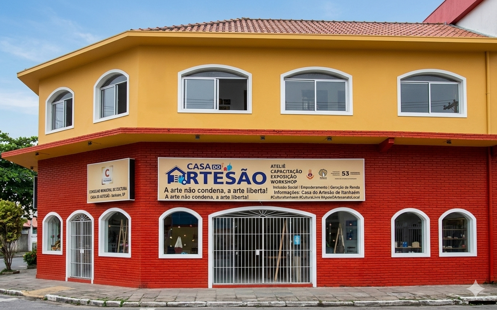

Casa do Artesão & Banco de Talentos
Conheça os talentos de Itanhaém. Aqui você encontra artesãos, músicos, pintores e escultores locais disponíveis para projetos e contratações.

A Casa do Artesão
Localizada em um dos pontos turísticos mais belos da cidade, a Praia dos Sonhos, a Casa do Artesão é o coração da economia criativa de Itanhaém. É um espaço colaborativo dedicado à exposição e comercialização de produtos manuais, valorizando a identidade caiçara.
Oficinas Culturais Oferecidas:
O espaço promove cursos de capacitação técnica e artística, incluindo: Pintura em Tecido, Crochê, Bordado, Escultura em Madeira, Macramê e Artesanato Sustentável com materiais recicláveis.
Coordenador: Rodrigo Dias
Nossos Talentos

Pintura em Tela

Escultura em Madeira